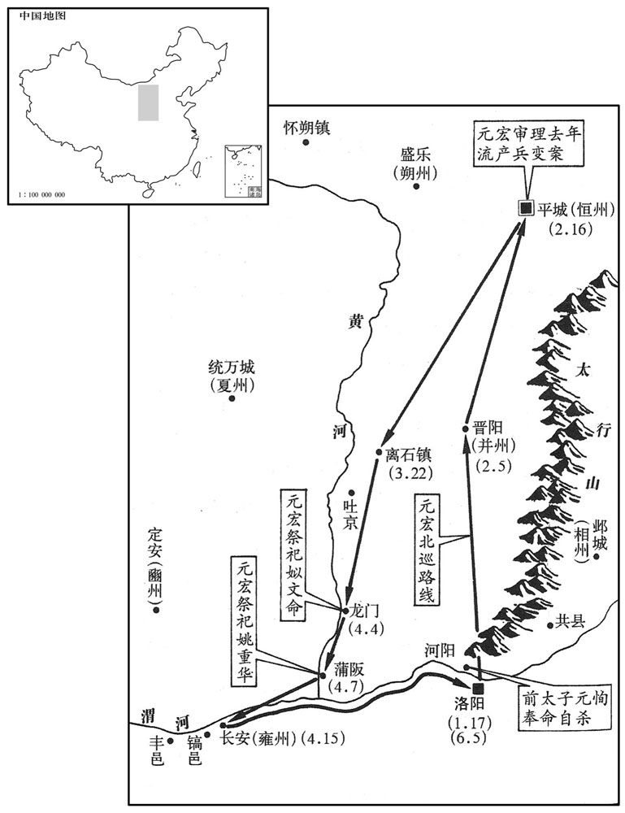
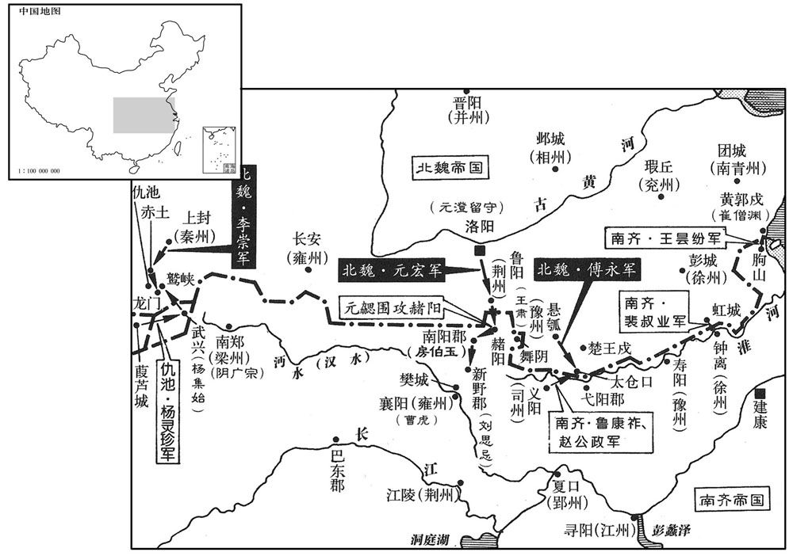

公元497年资治通鉴：本年记事、原文与白话对照
按原书编年位置阅读；追叙和史论不等于本年发生的事件。白话采用所据译本，缺译不以生成译文补齐。
卷141 · 本年记事
公元497年 · 齐高宗明皇帝建武四年
建武四年〔（丁丑、四九七）〕
上传原文的注释括号有异常，字符原样保留；无法可靠划分的段落默认全文显示。
本年事件索引（现代整理）
- 南齐大赦
- 北魏立元恪为太子
- 孝文帝北巡
- 王晏因受宠专权招致萧鸾猜忌
- 萧鸾诛杀王晏及其党羽
- 王思远多次劝王晏及早自裁以保全家族
- 阮孝绪不与王晏结党，王晏败后免罪
- 孝文帝抵达太原
- 南齐任徐孝嗣为尚书令
- 北魏处死穆泰及其党羽，赐陆叡死
- 元丕不乐迁都洛阳，孝文帝不强迫其改俗
- 元丕因参与留太子谋反被免死为民
- 孝文帝命李冲、于烈自尽并赦免元丕家人
- 司马光批评孝文帝失信于预赐免死的勋贵
- 北魏允许北方酋长秋赴洛阳、春归部落
- 孝文帝巡幸离石、龙门、蒲坂、长安
- 废太子元恂再谋反，被孝文帝赐死
- 北魏大将军刘昶去世，获殊礼安葬
- 孝文帝东还洛阳
- 穆罴因通谋获罪，穆亮辞去司空
- 北魏分定六军征南留守编制
- 北魏立冯昭仪为皇后，皇子元恪生母暴卒
- 北魏任穆亮为冀州刺史
- 北魏宣布内外戒严准备南征
- 北魏封诸皇子为京兆、清河、广平王
- 南齐追尊景皇生母王氏为恭太后
- 孝文帝在华林园讲武，率军离洛阳南征
- 南齐遣胡松等援守赭阳、舞阴
- 杨灵珍举南梁州降魏，魏军讨伐杨集始
- 孝文帝率军攻宛城并围南阳
- 魏主亲自逼近宛城城墙，房伯玉伏兵射杀魏军
- 李崇分路袭击杨灵珍并攻克武兴
- 孝文帝发南阳攻新野，刘思忌坚守不降
- 裴叔业攻虹城以牵制北魏援救雍州
- 南齐遣萧衍、张稷援雍州，魏军击败齐军
- 南齐复任杨灵珍为北秦州刺史、仇池公
- 张率万余家据栅抗魏，魏军攻下其营寨
- 孝文帝巡临沔水后返回新野
- 傅永连败南齐军并击退裴叔业
- 萧遥欣镇荆州招募勇士，萧鸾命刘季连牵制
- 高昌人杀马儒，立曲嘉为王并复臣柔然

本年形势与背景参考图

本年形势与背景参考图
春，正月，大赦。〔考异曰：齐帝纪云：「庚午，大赦。」按长历，是月己丑朔，无庚午，故不日。〕
春季，正月，大赦天下。
丙申，魏立皇子恪为太子。魏主宴于清徽堂，语及太子恂，李冲谢曰：「臣忝师傅，不能辅导。」帝曰：「朕尚不能化其恶，师傅何谢也！」
丙申（初八），北魏立皇子元恪为太子。孝文帝在清徽堂欢宴，说到太子元恂，李冲谢罪说：“我愧为太子师傅，没有能教导好他，实在有罪。”孝文帝说：“朕尚且不能教化他的劣恶，你做师傅的何必谢罪呢？”
乙巳，魏主北巡。
乙巳（十七日），北魏孝文帝去北方巡视。
初，尚书令王晏，为世祖所宠任；〔事见一百三十六卷世祖永明七年。〕及上谋废郁林王，晏即欣然推奉。〔事见一百三十九卷元年。〕郁林王已废，上与晏宴于东府，语及时事，晏抵掌曰：「公常言晏怯，今定何如﹖」上即位，晏自谓佐命新朝，常非薄世祖故事。既居朝端，〔尚书令位居朝臣之右。朝，直遥翻。〕事多专决，内外要职，并用所亲，每与上争用人。上虽以事际须晏，〔事际，谓举事之际；须者，倚其为用。〕而心恶之。〔恶，乌路翻。〕尝料简世祖中诏，〔料，音聊。〕得与晏手敕三百余纸，皆论国家事，又得晏启谏世祖以上领选事，〔见一百三十七卷永明八年。选，须绢翻。〕以此愈猜薄之。始安王遥光劝上诛晏，上曰：「晏于我有功；且未有罪。」遥光曰：「晏尚不能为武帝，安能为陛下乎！」〔为，于伪翻。〕上默然。上遣腹心陈〔【章：十二行本「陈」上有「左右」二字；乙十一行本同；孔本同；张校同。】〕世范等出涂巷，采听异言。晏轻浅无防，意望开府，数呼相工自视，〔数，所角翻。相，息亮翻。〕云当大贵；与宾客语，好屏人清闲。〔好，呼到翻。屏，必郢翻。〕上闻之，疑晏欲反，遂有诛晏之意。
早先，南齐尚书令王晏深得武帝的宠信，到了明帝谋划废去郁林王之时，王晏又立即欣然赞同，帮助进行。郁林王被废去之后，明帝与王晏在东府宴饮，谈到时事之时，王晏拍着手掌说道：“您经常说我王晏胆怯，今天又认定我如何呢？”明帝即位，王晏自以为对新朝有佐命之功，经常菲薄讥刺武帝在世时候的事情。他担任了尚书令，居于朝臣中的最高地位，处理事情非常专横独断，朝廷内外的重要职位，都任用自己的亲信之徒，经常与明帝在用人方面发生争执。明帝虽然因举事之际，不得不依赖、重用王晏，但是内心却十分厌恶他。明帝曾经整理检查武帝的诏书文告等材料，得到武帝写给王晏的手敕三百多张，都是谈论国家的事情，又获得王晏劝谏武帝不要让自己主管诠选之事的启奏，因此越发猜忌、冷淡王晏了。始安王萧遥光劝明帝杀掉王晏，明帝说：“王晏于我有功劳，况且没有罪过，所以不能杀他。”萧遥光又说：“王晏对武帝都不能忠心耿耿，怎么能忠于陛下呢？”明帝听了默然无言。明帝派遣心腹陈世范等人到街头小巷去采听关于王晏的传言异闻。王晏这个人轻率浅薄而没有防范，他想为自己开辟府署，几次传叫方术之士来查看风水，说是会大富大贵。王晏与宾客谈话时，总是喜欢把手下的杂人支开，然后与客人在清静中交谈。明帝知道了这些情况之后，怀疑王晏想谋反，于是产生了杀掉王晏的念头。
奉朝请鲜于文粲密探上旨，〔朝，直遥翻。探，吐南翻。〕告晏有异志。世范又启上云：「晏谋因四年南郊，与世祖故主帅于道中窃发。」〔帅，所类翻。〕会虎犯郊坛，上愈惧。未郊一日，有敕停行，先报晏及徐孝嗣。孝嗣奉旨，而晏陈「郊祀事大，必宜自力。」上益信世范之言。丙辰，召晏于华林省，诛之，〔省在华林园，因名。考异曰：晏传云：「元会毕，乃召晏诛之。」本纪：「丙辰，晏伏诛。」丙辰，正月二十八日也。按郊礼必在正月，既云未郊一日敕停，则诛晏必非元会之日也，本传盖言元会礼后耳。〕并北中郎司马萧毅、台队主刘明达，〔明达，盖世祖时主帅。〕及晏子德元、德和。下诏云：「晏与毅、明达以河东王铉识用微弱，谋奉以为主，使守虚器。」晏弟诩为广州刺史，上遣南中郎司马萧季敞袭杀之。季敞，上之从祖弟也。〔从，才用翻；下晏从同。〕萧毅奢豪，好弓马，为上所忌，故因事陷之。〔毅，高帝从子，新吴侯景先之子也。好，呼到翻。〕河东王铉先以年少才弱，故未为上所杀。铉朝见，常鞠躬俯偻，〔少，诗照翻。朝，直遥翻。见，贤遍翻。偻，力主翻。鞠躬，曲身也。俯，低头。偻，曲背。〕不敢平行直视。至是，年稍长，〔长，知两翻。〕遂坐晏事免官，禁不得与外人交通。
奉朝请鲜于文粲密探到了明帝的心思，就奏告了王晏有异图。陈世范又启奏明帝：“王晏密谋借建武四年南郊祭天之机，与武帝过去的主帅在道中起事。”正好遇上老虎闯入南郊祭坛，明帝愈加惧怕了。郊祭前一日，明帝敕令不去南郊祭祀，派人先告诉了王晏和徐孝嗣。徐孝嗣奉旨不言，而王晏则不同意明帝不去，陈述了自己的理由：“郊祀事关重大，圣上一定要亲自前去。”这样一来，明帝越加相信陈世范所说的了。丙辰（二十八日），明帝在华林省召见王晏，杀了他，一同诛死的还有北中郎司马萧毅、台队主刘明达，以及王晏的儿子王德元、王德和。明帝发出诏令：“王晏与萧毅、刘明达因为河东王萧崐铉识见低下、能力微弱，于是阴谋奉他为君主，让他守虚位，而他们自己操纵国政。”王晏的弟弟王诩担任广州刺史，明帝派遣南中郎司马萧季敞去突然杀掉了他。萧季敞是明帝的从祖弟。萧毅奢侈豪华，特别喜好弓箭、骏马，使明帝忌妒，因此借这件事陷害、杀害了他。河东王萧铉在早先因年龄小、才力弱，所以没有被明帝杀掉。萧铉在朝见明帝时总是保持鞠躬姿势，弯腰低头，不敢平行直视。至此时，年龄稍大了些，于是连坐王晏之事而被免官，并且被禁止与外面的人来往交接。
郁林王之将废也，晏从弟御史中丞思远谓晏曰：「兄荷世祖厚恩，〔荷，下可翻。〕今一日赞人如此事；彼或可以权计相须，未知兄将来何以自立！若及此引决，犹可保全门户，不失后名。」〔欲使之死郁林之难也。〕晏曰：「方噉粥，未暇此事。」及拜骠骑将军，〔帝初即位，进晏为骠骑大将军。噉，徒滥翻，又徒览翻。骠，匹妙翻。骑，奇寄翻。〕集会子弟，谓思远兄思征〔【章：十二行本「征」作「微」；乙十一行本同；孔本同；张校同；退斋校同；熊校同。】〕曰：「隆昌之末，阿戎劝吾自裁；若从其语，岂有今日！」思远遽应曰：「如阿戎所见，今犹未晚也。」〔晋、宋间人，多谓从弟为阿戎，至唐犹然。如杜甫于从弟杜位宅守岁诗云「守岁阿戎家」是也。〕思远知上外待晏厚而内已疑异，乘间谓晏曰：「时事稍异，兄亦觉不﹖〔间，古苋翻。不，读曰否。〕凡人多拙于自谋而巧于谋人。」晏不应。思远退，晏方叹曰：「世乃有劝人死者！」旬日而晏败。上闻思远言，故不之罪，仍迁侍中。
郁林王将被废黜之前，王晏的堂弟御史中丞王思远对王晏说：“兄长你承受武帝的厚恩，现在一旦帮助别人进行此事，在那个人来说或许可以暂时利用兄长，但不知兄长这样做了，将来别人何以自立呢？如果在现在能拿起刀子自刎而死，还可以保全门户，不失后世英名。”王晏不予理会，回答说：“我正在喝粥，无暇顾及此事。”明帝即位之后，拜王晏为骠骑将军，王晏把弟弟和儿子们召集在一起，对王思远的哥哥王思徵说：“隆昌之末，思远劝我自裁，如果听从了他的话语，那里能有今天呢？”王思远随声应道：“如按照小弟所说的那样去做，现在尚未为晚。”王思远知道明帝外表上对待王晏十分优厚而内心则已经开始怀疑他了，就乘机对王晏说：“眼下事情逐渐有异样，兄长觉察与否？人们大多拙于自谋而巧于谋算别人。”王晏听后没有吭声。王思远走了之后，王晏才叹息着说：“世上竟有劝人死的人。”十日之后，王晏被杀。明帝听说了王思远对王晏说过的话，所以没有定他的罪，并且升任他为侍中。
晏外弟尉氏阮孝绪亦知晏必败，〔尉氏县，汉属陈留，江左侨置于今六合县界，属秦郡。阮氏本尉氏人，此时未必居秦郡界。外弟，妻弟也。〕晏屡至其门，逃匿不见。尝食酱美，问知得于晏家，吐而覆之。〔既吐其所食者，又覆其所余者。〕及晏败，人为之惧，〔为，于伪翻。〕孝绪曰：「亲而不党，何惧之有！」卒免于罪。〔卒，子恤翻。〕
王晏的表弟尉氏人阮孝绪也知道王晏必定会败落，所以王晏屡次到他家去，他都躲而不见。一次，他吃酱觉得味道很香，一问才知道是从王晏家得来的，因此立即吐了出来，并且把其余的全部倒掉。到了王晏被杀之后，人们都为阮孝绪担心，他却不以为然，说：“虽然是亲戚，但是并不是同党，有什么害怕的呢？”最后他被免于定罪。
二月，壬戌，魏主至太原。
二月壬戌（初五），北魏孝文帝到达太原。
甲子，以左仆射徐孝嗣为尚书令，〔代王晏也。〕征虏将军萧季敞为广州刺史。〔代晏弟诩也。〕
甲子（初七），齐明帝任命左仆射徐孝嗣为尚书令，任命征虏将军萧季敞为广州刺史，分别代替王晏及其弟生前的职位。
癸酉，魏主至平城，引见穆泰、陆叡之党问之，〔见，贤遍翻。〕无一人称枉者；时人皆服任城王澄之明。穆泰及其亲党皆伏诛；赐陆叡死于狱，宥其妻子，徙辽西为民。〔考异曰：齐书魏虏传云：「伪征北将军恒州刺史巨鹿孤贺鹿浑守桑干，宏从叔平阳王安寿戍怀栅，在桑干西北。浑非宏任用中国人，与伪定州刺史冯翊公自邻、安乐公主拓跋阿干儿谋立安寿，分据河北。欺久不遂，安寿惧，告宏。杀浑等数百人，任安寿如故。」与魏书名姓全不同。今从魏书。〕
癸酉（十六日），北魏孝文帝到达平城，提审了穆泰、陆睿之党，没有一个人说自己冤枉。当时，人们都认为任城王元澄公正、明察。穆泰及其亲信党徒都伏法，陆睿被赐死狱中，他的妻子得到宽宥，被流放到辽西，成为平民。
初，魏主迁都，变易旧俗，并州刺史新兴公丕皆所不乐；〔乐，音洛。〕帝以其宗室耆旧，亦不之逼，但诱示大理，令其不生同异而已。〔示以事理之大归而已，不反复告语之。诱，音酉。〕及朝臣皆变衣冠，朱衣满坐，〔朝，直遥翻。坐，徂卧翻。〕而丕独胡服于其间，晚乃稍加冠带，而不能修饰容仪，帝亦不强也。〔强，其两翻。〕
早先，北魏孝文帝迁都洛阳，改变旧的风俗习惯，但是并州刺史新兴公元丕一点也不高兴这样做，孝文帝因为他在家族中年辈较长，因此就不强行让他改换，但是用大道理加以诱导劝说，以便使他不公开反对。到了朝中大臣们都改换了衣服帽子，每天上朝殿内朱衣满坐，但是惟独元丕还穿着胡服侧身其间，后来他才慢慢加上了帽子和带子，可是仍旧不修饰外表仪容，孝文帝也不强崐迫他。
太子恂自平城将迁洛阳，元隆与穆泰等密谋留恂，因举兵断关，规据陉北。〔陉北，即恒、朔二州之地。关，即鴈门之东陉、西陉二关也。断，丁管翻。陉，音刑。〕丕在并州，隆等以其谋告之。丕外虑不成，口虽折难，〔折，之列翻。难，乃旦翻。〕心颇然之。及事觉，丕从帝至平城，帝每推问泰等，常令丕坐观。有司奏元业、元隆、元超罪当族，丕应从坐。帝以丕尝受诏许以不死，听免死为民，留其后妻、二子，与居于太原，杀隆、超、同产乙升，〔同产，同母兄弟。〕余子徙敦煌。〔敦，徒门翻。〕
太子元恂将从平城迁往洛阳之时，元隆同穆泰等人密谋策划，要把元恂留在平城，因此出兵堵住雁门东陉、西陉二关，阴谋占据关北恒、朔二州。当时，元丕在并州，元隆等人把自己的计划告诉了他，元丕表面上忧虑事情难以成功，口头上虽然反对，但是心里却颇为赞同。等到穆泰等人叛乱之事败露之后，元丕随从孝文帝到了平城，孝文帝每次审问穆泰等人时，常常让元丕坐在旁边观看。有的官员奏告元业、元隆、元超罪该满门诛斩，元丕也应该连坐治罪。孝文帝以元丕曾经在诏令中被许以不死，就免他一死，黜为平民，让他的后妻和两个儿子陪伴他居住在太原，而杀了元隆、元超及其同胞兄弟元乙升，其他的儿子流放敦煌。
初，丕，叡与仆射李冲、领军于烈俱受不死之诏。叡既诛，帝赐冲、烈诏曰：「叡反逆之志，自负幽冥；违誓在彼，不关朕也。反逆既异，余犯虽欲矜恕，如何可得﹖然犹不忘前言，听自死别府，〔不就恒州刺史府赐死而死于狱，故曰别府。〕免其拏〔【章：十二行本「拏」作「孥」；乙十一行本同；孔本同；熊校同。〕戮。〔书甘誓曰：予则拏戮汝。孔安国注曰：拏，子也。免其拏戮，谓叡妻子免死徙辽西也。拏，音奴。〕元丕二子、一弟，首为贼端，连坐应死，特恕为民。朕本期始终而彼自弃绝，违心乖念，一何可悲！故此别示，想无致怪。谋反之外，皎如白日耳。」冲、烈皆上表谢。
原先，元丕、陆睿以及仆射李冲、领军于烈等人都受过皇帝的不死之诏。陆睿被杀之后，孝文帝在赐给李冲、于烈的诏书中说：“虽然朕曾经诏许陆睿在任何情况下都可以免于一死，可是他叛逆谋反的阴谋，自己有负于鬼神，是他违背了曾经发过的誓言，所以他的死与朕没有关系。他叛乱谋反既不同于其他诸犯，即使想要宽恕他，又怎么可能呢？然而朕犹不忘先前说过的话，所以让他自己在狱中自尽，并且免去他儿子的死罪。元丕的两个儿子、一个弟弟，最早策划叛乱，最先参与叛乱，理应连坐处死，朕特加恕免，只是黜为平民而已。朕本来期望与他们和衷共济，始终相善，但是他们自己弃绝情义，违背良心，产生不轨之念，这是多么令人感到可悲的啊！所以，特意告诉你们一下，想必不会令你们奇怪吧？除了谋反这件事情之外，朕对他们的一片真心皎如白月，在在可鉴。”李冲、于烈都上表致谢。
史家评论 · 原文及其白话
臣光曰：夫爵禄废置，杀生予夺，人君所以驭臣之大柄也。〔此周礼所谓八柄驭群臣者也。予，读曰与。〕是故先王之制，虽有亲、故、贤、能、功、贵、勤、宾，苟有其罪，不直赦也；必议于槐棘之下，〔此周礼所谓八议也。槐棘，公卿之位。王制：狱成，大司寇听之于棘木之下。〕可赦则赦，可宥则宥，可刑则刑，可杀则杀；轻重视情，宽猛随时。故君得以施恩而不失其威，臣得以免罪而不敢自恃。及魏则不然，勋贵之臣，往往豫许之以不死；彼骄而触罪，又从而杀之。是以不信之令诱之使陷于死地也。〔诱，音酉。〕刑政之失，无此为大焉！
臣司马光曰：给予或剥夺爵位、俸禄，掌管生杀予夺之权力，这是做皇帝的人驾驭臣下们的重要手段，所以先王们裁定的制度，虽然有亲、故、贤、能、功、勤、宾等所谓“八议”，但是如果臣下犯有罪行，并不直接赦免，而一定要通过刑法部门来商议，可以赦免则赦免，可以宽大则宽大，可以判刑则判刑，可以诛死则诛死，惩罚的轻与重根据实情而定，处理的宽与严随时机而有所不同。因此，国君得以施行仁恩而又不失其威严，臣子们既可以得到免罪而又不敢以此自恃。到了北魏却不是这样了，对于功勋显贵的大臣，往往预先许诺以终生不被处死，但是其人因此而自骄，触法犯罪，则又被处死。这正是以言而无信的允诺诱惑其人，使他陷于死地。刑法政治的失误过错，没有比这更大的了。
是时，代乡旧族，多与泰等连谋，唯于烈〔【章：十二行本「烈」下有「一族」二字；乙十一行本同；孔本同；张校同。】〕无所染涉，帝由是益重之。帝以北方酋长及侍子畏暑，〔酋，自秋翻。长，知两翻。〕听秋朝洛阳，春还部落，时人谓之「鴈臣」。〔以鴈避寒而南来，望暖而北还也。朝，直遥翻。〕
在这时候，平城的鲜卑族人，多数与穆泰等人一起策划，唯独于烈没有丝毫参涉，因此孝文帝对他更加器重了。孝文帝考虑到北方的酋长以及在身边侍奉自己的王子们害怕暑热，所以就任他们秋天来到洛阳，春天再返回各自的部落去，当时的人们称他们为“雁臣”。
三月，己酉，魏主南至离石。〔离石，汉县，属西河郡，隋为离石郡，唐为石州。〕叛胡请降，诏宥之。〔降，户江翻。〕夏，四月，庚申，至龙门，遣使祀夏禹。〔水经注：龙门上口在汉河东北屈县西，所谓孟门也。龙门下口在河东皮氏县西北，大禹所凿，故于此祠焉。〕癸亥，至蒲，祀虞舜。〔皇甫谧云：舜都蒲，故又于此祀焉。，音反。〕辛未，至长安。
本段缺少可靠对应白话，原文完整保留；未使用生成译文。
魏太子恂既废，颇自悔过。御史中尉李彪表恂复与左右谋逆，〔复，扶又翻。〕魏主使中书侍郎邢峦与咸阳王禧奉诏赍椒酒诣河阳，赐恂死，〔椒味辛，大热，有毒，其合口者尤甚。汉桓思后之议，李咸捣椒自随；帝煮椒二斛，以杀高、武诸子孙；皆是物也。〕敛以粗棺、常服，瘗于河阳。〔敛，力赡翻。瘗，一计翻。〕
北魏太子元恂被废之后，颇为悔恨自己过去的过失。御史中尉李彪秘密上表孝文帝，告发说元恂又与手下的人谋划叛逆，孝文帝派遣中书侍郎邢峦和咸阳王元禧奉着自己的圣旨，带着用椒子浸制的酒去河阳，赐元恂死，用粗劣的棺材和平常衣服装敛了他，埋葬在河阳。
癸未，魏大将军宋明王刘昶卒于彭城，葬〔【章：十一行本「葬」上有「追加九锡」四字；乙十一行本同；孔本同；张校同；退斋校同。】〕以殊礼。谥法：思虑果远曰明。谓昶远虑，果于违难而归魏也。〕
本段缺少可靠对应白话，原文完整保留；未使用生成译文。
五月，己丑，魏主东还，〔还，从宣翻，又如字。〕泛渭入河。壬辰，遣使祀周文王于丰，武王于镐。〔亦于故都祀之也。周之丰、镐，汉时悉在上林苑中。使，疏吏翻。〕六月，庚申，还洛阳。
五月，己丑（初三），北魏孝文帝东行返回，乘船从渭河进入黄河。壬辰（初六），孝文帝派遣使者分别在丰、镐两处祭祀周文王和周武王。六月，庚申（初五），孝文帝回到洛阳。
魏穆泰之反也，中书监魏郡公穆罴与之通谋，赦后事发，削官爵为民。罴弟司空亮以府事付司马慕容契，上表自劾，〔劾，户概翻，又户得翻。〕魏主优诏不许；亮固请不已，癸亥，听亮逊位。
北魏穆泰谋反时，中书监魏郡公穆罴曾与他一起策划，赦免之后事情被发现，从宽被削去官职和爵位，黜为平民。穆罴的弟弟担任司空的穆亮把府署中的事务交付给司马慕容契，上表孝文帝自行弹劾，孝文帝下诏抚慰，不许他辞职，但是穆亮再三请求，癸亥（初八），孝文帝只好同意穆亮辞去官职。
丁卯，魏分六师以定行留。
丁卯（十二日），北魏把军队分为六部分，以便决定哪些参加南征，哪些留守。
秋，七月，〔【章：十二行本「月」下有「甲午」二字；乙十一行本同；孔本同；退斋校同。】〕魏立昭仪冯氏为皇后。后欲母养太子恪；恪母高氏自代如洛阳，暴卒于共县。〔冯昭仪既谮废其妹，又潜杀太子之母，其心盖枭獍也。以魏主之明，而使之正位椒房，他日不死于其手者幸耳。共县，自汉以来属河内郡，晋及后魏属汲郡，唐卫州，共城县即其地。共，音恭。〕
秋季，七月，北魏册立昭仪冯氏为皇后。冯皇后想做太子元恪的母亲，亲自来抚养他。元恪的生母高氏从代都来洛阳时，突然死于共县。
戊辰，魏以穆亮为征北大将军、开府仪同三司、冀州刺史。
戊辰（十三日），北魏任命穆亮为征北大将军、开府仪同三司、冀州刺史。
八月，丙辰，魏诏中外戒严。〔将南伐也。〕
八月，丙辰（初一），北魏即将南伐，宣布内外戒严。
壬戌，魏立皇子愉为京兆王，怿为清河王，怀为广平王。
壬戌（初七），北魏封立皇子元愉为京兆王，元怿为清河王，元怀为广平王。
追尊景皇所生王氏为恭太后。〔帝即位，尊始安贞王曰景皇。称皇不称帝，用汉制也。〕
明帝追尊景皇生母王氏为恭太后。
甲戌，魏讲武于华林园；庚辰，军发洛阳。使吏部尚书任城王澄居守；〔任城王澄至是始为真吏部尚书。守，式又翻。〕以御史中丞李彪兼度支尚书，〔「中丞」，当作「中尉」。〔【章：十二行本正作「中尉」，孔本同；张校同。度，徒洛翻。〕与仆射李冲参治留台事。〔治，直之翻。〕假彭城王勰中军大将军，〔勰，音协。〕勰辞曰：「亲疏并用，古之道也。臣独何人，频烦宠授！昔思求而不允，〔曹魏文帝时，陈思王植上表求自试以攻吴、蜀，帝不许。〕愚臣不请而得，何否泰之相远也！〔天地交曰泰，天地不交曰否。陈思于魏文，上下之情不通，故曰否。勰则君臣、兄弟之情无间，故曰泰。否，皮鄙翻。〕魏主大笑，执勰手曰：「二曹以才名相忌，〔二曹，谓魏文帝、陈思王也。〕吾与汝以道德相亲。」
甲戌（十九日），北魏孝文帝在华林园讲习武事。庚辰（二十五日），北魏从洛阳发兵，进行南征。孝文帝使吏部尚书任城王元澄留守洛阳，让御史中丞李彪兼任度支尚书，并且让他与仆射李冲一道参与掌管留守事宜。孝文帝又授与彭城王元勰中军大将军的官衔，元勰辞而不受，对孝文帝说：“亲疏崐远近一并用之，这是古代留下来的治国之道。我是何人呢？频繁地劳烦圣上施授恩宠，实在于心不安。过去陈思王曹植上表魏文帝，自请攻打吴、蜀，魏文帝不答应。愚臣不请而自得，与陈思王相比较，为何命运的顺利和不顺利相差的如此远呢？”孝文帝听了之后大笑不已，拉着元勰的手说道：“曹丕、曹植兄弟二人以才气而互相忌妒，我与你则以道德而互相亲密。”
上遣军主、直合将军胡松助北襄城太守成公期戍赭阳，〔赭，音者。〕军主鲍举助西汝南、北义阳二郡太守黄瑶起戍舞阴。〔萧子显齐志：西汝南属雍州，北义阳属雍州宁蛮府，自宋未有双头郡太守，率治一处。舞阴县，自汉以来属南阳郡，为西汝南、北义阳二郡治所。〕
齐明帝派遣军主、直阁将军胡松帮助北襄城太守成公期戍守赭阳，军主鲍举协助西汝南、北义阳二郡太守黄瑶起防守舞阴。
魏以氐帅杨灵珍为南梁州刺史。灵珍举州来降，〔魏置梁州于仇池，置南梁州于武兴。帅，所类翻。降，户江翻；下同。〕送其母柔子于南郑以为质，〔质，音致。遣其弟婆罗阿卜珍将步骑万余袭魏武兴王杨集始，〔将，即亮翻。骑，奇寄翻。〕杀其二弟集同、集众；集始窘急，请降。九月，丁酉，魏主以河南尹李崇为都督陇右诸军事，将兵数万讨之。
两版字句有差异，建议核对原文。
北魏任命氐族首领杨灵珍为南梁州刺史。杨灵珍率全州之部来投降南齐，并且把他的母亲以及儿子送到南郑作为人质，又派遣他的弟弟杨婆罗阿卜珍带领步兵、骑兵一万余众袭击北魏武兴王杨集始，杀掉了杨集始的两个弟弟杨集同和杨集众，杨集始在危急无奈的情况之下请求投降。九月丁酉（十三日），北魏孝文帝任命河南尹李崇为都督陇右诸军事，命令他统领数万兵力讨伐杨灵珍。
初，魏迁洛阳，荆州刺史薛真度劝魏主先取樊、邓。〔此时魏荆州犹治鲁阳，樊、邓逼近洛阳，欲先取之以广封略。〕真度引兵寇南阳，太守房伯玉击败之。〔此谓去年沙堨之败也。击败，补迈翻。〕魏主怒，以南阳小郡，志必灭之，遂引兵向襄阳，彭城王勰等三十六军前后相继，众号百万，吹唇沸地。〔吹唇者，以齿啮唇作气吹之，其声如鹰车。其下者以指夹唇吹之，然后有声，谓之啸指。〕辛丑，魏主留诸将攻赭阳，自引兵南下；癸卯，至宛，夜袭其郛，克之。〔宛，于元翻。郛，芳无翻。城之外郭曰郛。〕房伯玉婴内城拒守，魏主遣中书舍人孙延景〔考异曰：齐书作「公孙云」，今从魏书。〕谓伯玉曰：「我今荡壹六合，非如向时冬来春去，不有所克，终不还北。卿此城当我六龙之首，〔易曰：时乘六龙以御天。人君之象也。〕无容不先攻取，远期一年，近止一月。封侯、枭首，事在俯仰，宜善图之！〔枭，坚尧翻。〕且卿有三罪，今令卿知：卿先事武帝，蒙殊常之宠，不能建忠致命而尽节于其雠，罪一也。〔明帝夷灭武帝子孙，故谓之雠。〕顷年薛真度来，卿伤我偏师，罪二也。今鸾辂亲临，不面缚麾下，罪三也。」伯玉遣军副乐稚柔对曰：「承欲攻围，期于必克。卑微常人，得抗大威，真可谓获其死所！外臣蒙武帝采拔，岂敢忘恩！但嗣君失德，主上光绍大宗，〔言帝自小宗入为高宗第三子，以绍大宗。〕非唯副亿兆之深望，抑亦兼武皇之遗敕；是以区区尽节，不敢失墬。往者北师深入，寇扰边民，辄厉将士以修职业。〔将，即亮翻。〕反己而言，不应垂责」。
当初，北魏迁都洛阳，荆州刺史薛真度劝孝文帝首先占取樊、邓两地。薛真度率兵攻打南阳，南齐的南阳太守房伯玉击败了他。北魏孝文帝见薛真度战败，勃然生怒，以为南阳不过区区一小郡，所以立志要灭掉它，于是就率兵向襄阳进发，彭城王元勰等三十六路军马前后相继，号称百万大军，浩浩荡荡，吹气震动大地。辛丑（十七日），孝文帝留下诸路将帅攻打赭阳，自己领兵南下，于癸卯（十九日），到达宛城，乘夜攻打宛城外城，一举而攻克。房伯玉环守内城而顽抗拒守，孝文帝派遣中书舍人孙延景为使者去对房伯玉说：“我如今要荡平统一天下，不会再象上一次那样冬天来春天去，这次如果不能克敌取胜，誓死不率师北返。你的这座城正在我的战车之前，不得不首先攻取，远则一年，近则只一月，一定要占领。你是愿意归顺我朝以换得封侯加爵呢？还是执意顽抗到底，落个身首异处的下场呢？何去何从，俯仰之间即可决定，你应该好好地考虑一下。而且，你有三条罪状，现在说出来让你知道：你先前奉事武帝，得到了武帝特别的宠信，然而你却不能舍命尽忠而丧失节操，效力于他的仇人，这是罪状之一。近年薛真度奉我的旨令来讨伐，你给他们造成严重创伤，这是罪状之二。现在，我舆驾亲临，你不自缚投降，反而负隅顽抗，这是罪状之三。”房伯玉也派遣军副乐稚柔去对孝文帝说：“承蒙你们来围攻本城，并且期望一定攻克。我是一个地位卑微的平常之人，能得以与威严的陛下抗衡，真可以说是获得了一个理想的死亡之所。外臣我承蒙武帝提拔重用，岂敢忘记大恩呢？但是继位的君主没有仁德，因而我主上作为高帝第三子而即位，不但符合百姓之厚望，而且也兼合武帝之遗愿。所以，我只能竭力尽忠，不敢有所失误。上次你们的军队深入我边境，骚扰掠夺我边民，我只好命令将士们加以抵抗，这也是尽职尽责，如果你能反过来想一想，就不应该对我加以指责。”宛城东南隅沟上有桥，魏主引兵过之。伯玉使勇士数人，衣班衣，戴虎头帽，伏于窦下，突出击之，魏主人马俱惊；召善射者原灵度射之，应弦而毙，乃得免。
宛城东南角的河沟上有一座桥，北魏孝文帝率兵从桥上经过，房伯玉预先指使几个勇士，身穿带有斑纹的衣服，头戴虎头帽，埋伏在桥底下，这时突然袭击，使得孝文帝的人马大吃一惊，急忙叫射箭能手原灵度用箭射他们，箭无虚发，无不应弦而毙，方才免于一难。
宛城东南隅沟上有桥，魏主引兵过之。伯玉使勇士数人，衣班衣，戴虎头帽，〔人衣，如既翻。虎头帽者，帽为虎头形。〕伏于窦下，突出击之，魏主人马俱惊；召善射者原灵度射之，〔度射，而亦翻。〕应弦而毙，乃得免。
本段缺少可靠对应白话，原文完整保留；未使用生成译文。
李崇槎山分道，出氐不意，表里袭之；〔槎，士下翻，逆斫木也。〕群氐皆弃杨灵珍散归，灵珍之众减太半，崇进据赤土。〔魏收志，南秦州武阶郡有赤土县。五代志：武都郡覆津县，后魏置武阶郡。〕灵珍遣从弟建〔【章：十二行本「建」下有「帅五千人」四字；乙十一行本同；孔本同；张校同；退斋校同。】〕屯龙门，自帅精勇一万屯鹫峡；〔按魏收志，东益州武兴郡有石门县。五代志：武都将利县，旧曰石门。又，仇池山下有飞龙峡，以氐酋杨飞龙据仇池得名。又，今龙州江油县东二十里有龙门山；又，江油县东百里有石门戍。武兴，今为兴州；龙州去兴州甚远，杨建所屯者必非江油之龙门也。水经注：仇池东北有龙门戍，此其是欤！鹫峡当在龙门西南。从，才用翻。帅，读曰率；下同。鹫，音就。〕龙门之北数十里中，伐树塞路；鹫硖之口，〔【章：十二行本「口」下有「积大木」三字；乙十一行本同；孔本同；张校同；退斋校同。】〕聚礌石，临崖下之，以拒魏兵。〔塞，悉则翻。礌，卢对翻；埤苍曰：推石自高而下也。汉书李陵传：乘隅下垒石。师古曰：言放石以投人，因山隅曲而下也。垒，音卢对翻，与此礌音同。〕崇命统军慕容拒帅众五千从他路入，夜，袭龙门，破之，崇自攻鹫峡；灵珍连战败走，俘其妻子，遂克武兴，梁州刺史阴广宗、参军郑猷等将兵救灵珍；崇进击，大破之，斩杨婆罗阿卜珍，生擒猷等，灵珍奔还汉中。魏主闻之，喜曰：「使朕无西顾之忧者，李崇也。」以崇为都督梁‧秦二州诸军事、梁州刺史，以安集其地。
孝文帝派李崇去征讨杨灵珍，李崇在山上砍斫树木，开道而行，里外夹击，打了个措手不及，使得那些氐人纷纷丢下杨灵珍而溃散逃命，杨灵珍的人马一下子减去了大半，于是李崇进而占领了赤土，杨灵珍派遣堂弟杨灵建驻守龙门，而自己则率领一万精锐兵力驻守鹫硖。杨灵建命部下砍伐大树，堵塞在路上，把龙门往北数十里之内的路全堵了，使得李崇的人马无法行动。而杨灵珍则在鹫硖口两边高崖上堆积了许多滚石，以防拒北魏军队通过。李崇命令统军慕容拒带领五千人马从另外一条路进去，夜袭龙门，破敌成功。李崇自己率众攻打鹫硖，杨灵珍连战而败，逃走活命，李崇俘获了他的妻儿，于是攻克了武兴。南齐梁州刺史阴广宗、参军郑猷等人率兵来援救杨灵珍，李崇迎而击之，大获全胜，杀死了杨婆罗阿卜珍，活捉了郑猷等人，杨灵珍逃回汉中。北魏孝文帝听到捷报，高兴地说：“使朕解除西顾之忧的是李崇。”孝文帝任命李崇为都督梁秦二州诸军事、梁州刺史，以便安定这个地方。
丁未，魏主发南阳，留太尉咸阳王禧等攻之。己酉，魏主至新野，新野太守刘思忌拒守。冬，十月，丁巳，魏军攻之不克，筑长围守之，遣人谓城中曰：「房伯玉已降，汝何为独取糜碎！」思忌遣人对曰：「城中兵食犹多，未暇从汝小虏语也！」魏右军府长史韩显宗将别军屯赭阳，〔右军府，右军将军府也。将，即亮翻；下同。〕成公期遣胡松引蛮兵攻其营，〔胡松时助戍赭阳。〕显宗力战，破之，斩其裨将高法援。显宗至新野，魏主谓曰：「卿破贼斩将，殊益军势。朕方攻坚城，何为不作露布﹖」〔五代史志曰：后魏每攻战克捷，欲天下闻知，乃书帛建于竿上，名曰露布。魏主谓显宗若露布上闻行在所，则增益魏军之胜势，可以摇城中坚守之心。〕对曰：「顷闻镇南将军王肃获贼二、三人，驴马数匹，皆为露布；臣在东观，私常哂之。〔韩显宗对策甲科，除著作郎，故云在东观。观，古玩翻。哂，矢引翻；笑不坏频曰哂。〕近虽仰凭威灵，得摧丑虏，兵寡力弱，擒斩不多。脱复高曳长缣，虚张功烈，尤而效之，其罪弥大。〔左传曰：尤而效之，罪又甚焉。尤，责也，过也，甚之之辞也。复，扶又翻。〕臣所以不敢为之，解上而已。」〔丁度集韵，解，居隘翻，闻上也。上，时掌翻。自下而闻于上谓之上。〕魏主益贤之。
丁未（二十三日），北魏孝文帝从南阳出发，留下太尉咸阳王元禧等人继续攻打该处。己酉（二十五日），孝文帝到达新野，南齐新野太守刘思忌据城抵抗。冬季，十月，丁巳（初三），北魏军队攻打新野，但是不能攻克，就修筑工事，加以围困，并且派人对城中守军说：“房伯玉已经投降了，你们为什么还不献城出降，欲想落个粉身碎骨的下场呢？”刘思忌派人回答说：“城中的兵力和粮食还很多，现在我们还忙得没有时间跟你们这些小小的胡虏们说话。”北魏右军府长史韩显宗率领另外一支军队驻守在赭阳，南齐北襄城太守成公期派遣胡松带领蛮兵去攻打韩显宗的营地，韩显宗率部力战，击败了胡松的进攻，杀了胡松的副将高法援。韩显宗到新野，孝文帝对他说：“你击败贼敌，斩其将领，大长了我军的威风气势。朕正在攻打新野这座坚城，你为什么不把捷报写于帛布之上，以高竿树之，以增加我军的斗志，动摇城中守军的信心呢？”韩显宗回答说：“过去听说镇南将军王肃才俘获敌贼二三人、驴马几匹，就书帛高挂，我当时正在宫中任著作郎，私下里常常讥笑王肃的这一做法。现在，我虽然凭借圣上的威灵，摧折敌虏，但是由于兵力寡少、力量不足，所以擒捉和斩杀敌贼不多。如果我也象王肃那样把本来不足道的小捷写于帛布之上，高竿挂起，以此虚张功劳，效法王肃，其罪则更大。所以，我不能那样做，只是告捷于圣上就行了。”由此，孝文帝更加认为韩显宗忠贤了。
上诏徐州刺史裴叔业引兵救雍州。〔雍，于用翻；下同。〕叔业启称：「北人不乐远行，唯乐钞掠。〔乐，音洛。〕若侵虏境，则司、雍之寇自然分矣。」上从之。叔业引兵攻虹城，〔此即汉沛郡之虹县城也。师古曰：虹，音贡。南北兵争，其地在下邳夏丘县界；唐复为虹县，属泗州。虹，今读如绛。〕获男女四千余人。
南齐明帝诏令徐州刺史裴叔业领兵去援救雍州，裴叔业启奏齐明帝：“北方人不乐意远道而行，而只乐意掠抢，所以如果入侵敌人境内，则司州、雍州的敌寇自然会撤退。”明帝听从了这一建议。于是，裴叔业率兵攻打虹城，俘获男女四千多人。
甲戌，遣太子中庶子萧衍、右军司马张稷救雍州。十一月，甲午，前军将军韩秀方等十五将降于魏。〔将，即亮翻。降，户江翻。〕丁酉，魏败齐兵于沔北，〔败，补迈翻。〕将军王伏保等为魏所获。
甲戌（二十日），明帝派遣太子中庶子萧衍、右司马张稷去援救雍州。十一月，甲午（十一日），前军将军韩秀方等十五个将领投降北魏。丁酉（十四日），北魏军队在沔北打败了南齐兵，将军王伏保等人被北魏俘获。
丙辰，以杨灵珍为北秦州刺史、〔考异曰：齐氐传作「北梁州」，今从齐书。〕仇池公、武都王。
丙辰（疑误），南齐任命杨灵珍为北秦州刺史，并封他为仇池公、武都王。
新野人张独帅万余家据栅拒魏，〔独，与猪同，陟鱼翻。帅，读曰率；下同。〕十二月，庚申，魏人攻拔之。雍州刺史曹虎与房伯玉不协，故缓救之，顿军樊城。〔考异曰：齐据虏传云「均口」，今从虎传。余谓曹虎之顿军樊城，不特因与房伯玉不协而然，亦由畏魏兵之强而不敢进也。〕
新野人张率领一万余户人家据守栅垒抵拒北魏军队，十二月庚申（初七），北魏军队攻占栅垒。南齐雍州刺史曹虎与房伯玉不合，所以迟迟不去援救他，驻扎在樊城按兵不动。
丁丑，诏遣度支尚书崔慧景救雍州，假慧景节，帅众二万、骑千匹向襄阳，雍州众军并受节度。
丁丑（二十四日），明帝诏令度支尚书崔慧景去援救雍州，并且授与符节，雍州诸军全部受他指挥调度。于是崔慧景率领两万兵众、一千骑兵，直向襄阳奔去。
庚午，魏主南临沔水；〔沔，弥兖翻。〕戊寅，还新野。
庚午（十七日），北魏孝文帝南行到达沔水；戊寅（二十五日），孝文帝回到新野。
将军王昙纷严：「纷」改「分」。】〕以万余人攻魏南青州黄郭戍，〔魏收志：东魏孝静帝武定七年置义塘郡，治黄郭城。又按五代志：海州怀仁县，梁置南北二青州；东魏废州，立义塘郡及怀仁县。昙，徒含翻。〕魏戍主崔僧渊破之，举军皆没。将军鲁康祚、赵公政将兵万人侵魏太仓口，〔据傅永传：太仓口在魏豫州界。是时魏置豫州于汝南新息县广陵城，与齐义阳隔淮对垒，则太仓口当在淮北岸，以魏人积仓粟于此而有是名也。〕魏豫州刺史王肃使长史清河溥永将甲士三千击之。康祚等军于淮南，永军于淮北，相去十余里。永曰：「南人好夜斫营，〔好，呼到翻；下好学同。〕必于渡淮之所置火以记浅。〔【章：十二行本「浅」下有「处」字；乙十一行本同；孔本同；张校同。】〕乃夜分为二部，伏于营外；又以瓠贮火，〔瓠，户误翻。匏也。贮，丁吕翻，盛也。〕密使人过淮南岸，于深处置之，戒曰：「见火起，则亦然之。」〔然，与燃同。〕是夜，康祚等果引兵斫永营，伏兵夹击之。康祚等走趣淮水，〔趣，七喻翻。〕火既竞起，不知所从，溺死及斩首数千级，〔溺，奴狄翻。〕生擒公政，获康祚之尸以归。豫州刺史裴叔业侵魏楚王戍，〔裴叔业盖自徐州迁为豫州。水经注：鲖县有葛陵城，城东北有楚武王耱，民谓之楚王瑟城。魏盖于此置戍，因谓之楚王戍。〕肃复令永击之。〔复，扶又翻。〕永将心腹一人驰诣楚王戍、令填外堑，〔堑，七艳翻。〕夜伏战士千人于城外。晓而叔业等至城东部分，将置长围。〔分，扶问翻。〕永伏兵击其后军，破之。叔业留将佐守营，自将精兵数千救之。〔将，即亮翻。〕永登门楼，望叔业南行数里，即开门奋击，大破之，获叔业伞扇、鼓幕、甲仗万余。叔业进退失窃，遂走；左右欲追之，永曰：「吾弱卒不满三千，彼精甲犹盛，非力屈而败，自堕吾计中耳。既不测我之虚实，足使丧胆，〔丧，息浪翻。〕俘此足矣，何更追之！」魏主遣谒者就拜永安远将军、汝南太守，封贝丘县男。〔守，式又翻。〕永有勇力，好学能文。魏主常叹曰：「上马能击贼，下马作露版，唯傅修期耳！」〔言永有武干，又有文才也。傅永，字修期。〕
南齐将军王昙纷率领一万多兵众攻打北魏南青州黄郭戍，北魏的戍军首领崔僧渊率兵抵抗，大获全胜，王昙纷全军覆没。南齐将军鲁康祚、赵公政率兵一万人侵北魏太仓口，北魏豫州刺史王肃命令长史清河人傅永率甲兵三千去袭击。鲁康祚、赵公政驻扎在淮水之南，傅永驻扎在淮水之北，彼此相距十多里远。傅永对部下说：“南方人喜欢夜间闯营攻击，他们一定要在渡河的地方放置火把，以便指示何处水浅可以涉渡。”于是，到了夜间，傅永把手下的兵力分成两部分，让他们埋伏在营盘外面，又在大瓢里装满易燃物，派人秘密地渡过淮河到达南岸，把大瓢放置于水深之处，并告诉说：“一见对岸火起，你们就点燃它。”这天夜里，鲁康祚等人果然率兵来破傅永的营盘，傅永的伏兵左右夹击，鲁康祚抵挡不住，慌忙回撤到淮河边上，这时傅永派往南岸的人点起了火，使得鲁康祚等不知何处水深、何处水浅，只好胡乱涉水而逃，结果被淹死和斩首好几千人。最后，傅永活捉了赵公政，并且获得了鲁康祚的尸体，胜利而归。南齐豫州刺史裴叔业入侵北魏楚王戍，王肃再次命令傅永去袭击。傅永带领心腹一人骑马疾奔楚王戍，命令他们填平戍所的外壕，夜里又在城外崐埋伏下战士千人。天亮之后，裴叔业率部到了城东边，安排部署兵力，准备围城攻打。傅永的伏兵对裴叔业的后军展开了袭击，败敌获胜。裴叔业留下其他将领守护营盘，自己率领精兵数千去援救后军。这时，傅永登上城门楼，望见裴叔业已经率兵往南走去数里地了，就命令打开城门，奋力出击，结果大败敌兵，缴获了裴叔业的伞扇、鼓幕，以及盔甲兵器一万余件。裴叔业进退都失去凭借，只好逃跑。傅永手下的人要去追击，但是傅永不许，他说：“我们的兵力弱，还不足三千，而他们的兵力还很强大，并不是因为力量不足而败逃，而是落入了我的计谋圈套。他们不知道我们的虚实，经这么一击，就足以使他们闻风丧胆了，我们已经俘获了他们这么多的人和物，就相当满足了，何必再追击呢？”北魏孝文帝派遣谒者去任命傅永为安远将军、汝南太守，并封他为贝丘县男。傅永勇武有力，并且好学能文，孝文帝常常赞叹说：“上马能击贼，下马作文章，只有傅期才能这样文武双全啊！”
曲江公遥欣好武事，〔好，呼到翻。〕上以诸子尚幼，内亲则仗遥欣兄弟，外亲则倚后弟西中郎长史彭城刘暄、内弟太子詹事江佑；〔帝母景皇后，祏之姑也，故曰内弟。〕故以始安王遥光为扬州刺史，居中用事；遥欣为都督荆‧雍等七州诸军事、荆州刺史，镇据西面。而遥欣在江陵，多招材勇，厚自封殖，上甚恶之。〔恶，乌路翻。〕遥欣侮南郡太守刘季连，季连密表遥欣有异迹；〔包藏祸心者，谓之异志。形见于事为，谓之异迹。〕上乃以季连为益州刺史，〔为后刘季连据益州张本。〕使据遥欣上流以制之。季连，思考之子也。〔思考，刘遵考之弟。〕
南齐曲江公萧遥欣爱好武事，明帝因为自己的儿子尚且年幼，所以在内亲中依靠萧遥欣兄弟俩，在外戚中则倚仗皇后之弟西中郎彭城人刘暄，以及表弟太子詹事江。于是，明帝任命始安王萧遥光为扬州刺史，让他在建康主事；任命萧遥欣为都督荆、雍等七州诸军事及荆州刺史，让他坐镇西面。然 而，萧遥欣却在江陵大量招收勇士，聚敛财物，使劲扩大自己的势力，明帝非常不满。萧遥欣又侮辱南郡太守刘季连，刘季连秘密上表明帝，说萧遥欣图谋不轨，并且有所举动。于是，明帝就任命刘季连为益州刺史，使刘季连据于萧遥欣的上方，以便牵制他。刘季连是刘思考的儿子。
是岁，高昌王马儒遣司马王体玄入贡于魏，请兵迎接，求举国内徙；魏主遣明威将军韩安保迎之，剖伊吾之地五百里以居儒众。儒遣左长史顾礼、右长史金城曲嘉将步骑一千五百迎安保，而安保不至；〔将，即亮翻。骑，奇寄翻。〕礼、嘉还高昌，安保亦还伊吾。安保遣其属朝严：「朝」改「韩」。】〕兴安等使高昌，〔朝，姓也。汉有鼌错，史纪作朝错。朝，直遥翻。使，疏吏翻。〕儒复遣顾礼将世子义舒迎安保，〔复，扶又翻；下同。〕至白棘城，去高昌百六十里。高昌旧人恋土，不愿东迁，相与杀儒，〔魏太和五年，马儒始王高昌，至是为国人所杀。〕立曲嘉为王，〔曲氏得高昌始此。嘉，字灵凤，金城榆中人。〕复臣于柔然。安保独与顾礼、马义舒还洛阳。
这一年，高昌王马儒派遣司马王体玄来向北魏上贡，要求带领全国人内迁，并且请求北魏派兵迎接。孝文帝派遣明威将军韩安保前去迎接，并且割划伊吾方圆五百里地，以供马儒及其部属居住。马儒派遣左长史顾礼、右长史金城人嘉率领步、骑兵一千五百人去迎接韩安保，但是韩安保没有到达，顾礼、嘉只好返回高昌。顾、走后，韩安保才到，见没有人来接，也返回伊吾。韩安保派遣属下朝兴安等人出使高昌国，马儒又派遣顾礼率领世子马义舒到离高昌一百六十里的白棘城去迎接韩安保。高昌国的本地居民留恋故土，不愿意往东迁，就一起商量杀死了马儒，拥立嘉为国王，仍旧称臣于柔然国。韩安保只与顾礼、马义舒回到洛阳。
译本中未与胡注本可靠对应的内容
以下另列供核对版本差异，不并入胡注本正文。
译本所附古文
[11]癸未，魏大将军宋明王刘昶卒于彭城，葬以殊礼。
译本白话
癸未（二十七日），北魏的大将军宋明王刘昶死于彭城，以特别的礼仪安葬。
译本所附古文
[13]壬戌，魏发冀、定、瀛、相、济五州兵二十万，将入寇。
译本白话
壬戌（初七），北魏发动冀、定、瀛、相、济等五州的二十万大军，即将入侵南齐。
译本所载内容待核对（不作白话）
[9]三月，己酉，魏主南至离石。叛胡请降，诏宥之。夏，四月，庚申，至龙门，遣使祀夏禹。癸亥，至蒲坂，祀虞舜。辛未，至长安。[9]三月己酉（二十二日），北魏孝文帝到达离石，反叛的胡人请求投降，孝文帝诏令宽恕了他们。夏季，四月，庚申（初四），孝文帝到达龙门，派遣使者去祭祀夏禹。癸亥（初七），孝文帝到达蒲坂，祭祀虞舜。辛未（十五日），孝文帝到达长安。